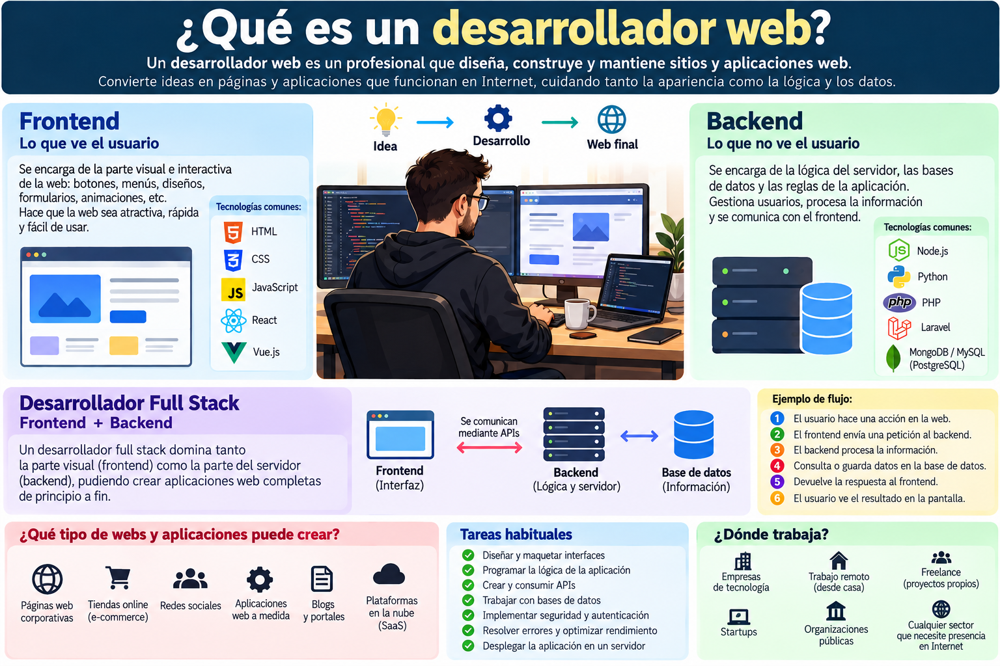

Qué es un desarrollador full stack

Un desarrollador full stack trabaja en distintas capas de una aplicación web. En el frontend se ocupa de la parte con la que interactúan las personas: páginas, formularios y otros elementos de la interfaz.
En el backend trabaja con la lógica que procesa las solicitudes y con los servicios y datos que necesita la aplicación. Comprender ambas áreas permite colaborar en diferentes partes de un mismo proyecto.
El recorrido suele comenzar por los fundamentos de HTML y continuar con la práctica de proyectos que conecten la interfaz con la lógica de una aplicación.